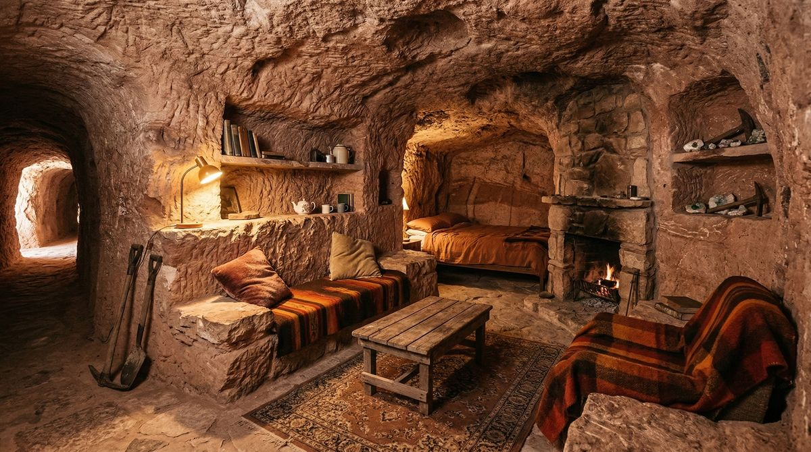
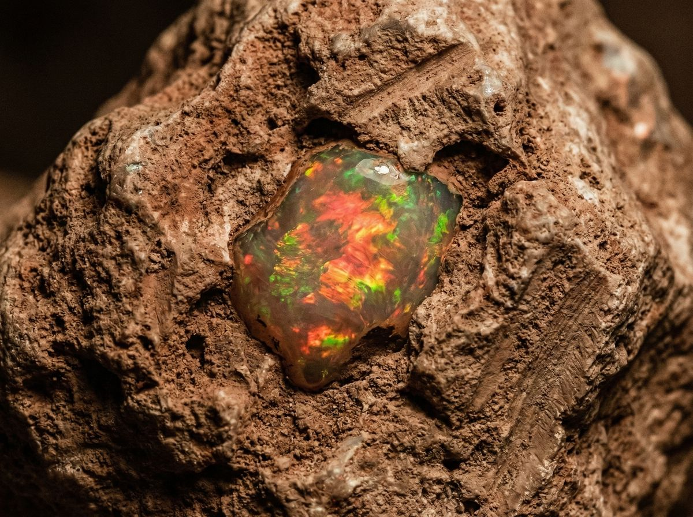

Dacă ai fi acolo acum, ai vedea mai întâi nimic. Doar roșul pământului care se întinde până la orizont, fără copaci, fără umbră, fără nicio urmă de civilizație. Când cobori de pe Stuart Highway și intri în Coober Pedy, orașul apare de nicăieri — o grămadă de structuri joase, camuflate în peisajul deșertic.
Numele vine din aborigenă: kupa piti, adică "gaura omului alb". Numele potrivit. Coober Pedy nu e un oraș construit, e un oraș săpat. Locuitorii au început să-și facă case în pământ la începutul anilor '60, când căldura de 50 de grade la umbră a devenit insuportabilă. Acum, șaizeci la sută din populație trăiește subteran, în ceea ce ei numesc "dugouts" — case săpate direct în dealurile de argilă.
Ceea ce e surprinzător e că aceste case nu sunt niște peșteri primitive. Au tot ce-ți poți imagina: electricitate, apă curentă, internet, mobilă, podele laminate, pereți vopsiți. Temperatura rămâne constantă în jur de 23-24 de grade indiferent de cât de fierbinte e afară sau cât de mult plouă. Nu ai nevoie de aer condiționat, nu ai nevoie de încălzire. Pământul se ocupă de tot.
E genul de loc pe care îl înțelegi doar dacă petreci o noapte acolo. Când te culci într-un dugout, ești surprins de cât de liniște e. Nu e zgomot de trafic, nu e vânt care bate la ferestre, nu e nici măcar țiuitul unui insect. E doar liniște absolută, înconjurat de pereți groși de argilă care absorb tot sunetul.

Australia produce nouăzeci și cinci la sută din opalele lumii, iar Coober Pedy e inima industriei. Aici sunt șaptezeci de câmpuri de opale în jurul orașului, iar oamenii continuă să sape în speranța că vor găsi acea piatră care îi va schimba viața. Dar ceea ce face Coober Pedy unic nu sunt doar opalele — e modul în care oamenii au găsit să trăiască în unul dintre cele mai ostile locuri de pe planetă.

Mergi pe străzile orașului și vezi semne care spun "Underground Hotel", "Underground Church", "Underground Museum". E chiar un motel subteran care a fost folosit pentru scenele din Mad Max Beyond Thunderdome și Red Planet. Există o biserică săpatată în stâncă, cu pereți de piatră brută și vitralii care luminează altarul. Există un muzeu subteran care arată cum arată viața sub pământ.
Ceea ce nu îți spune nimeni este că viața subterană are și părțile ei. Pământul nu e perfect — uneori se sparge, uneori se scurge, uneori e umed. Trebuie să fii atent la ventilare, la electricitate, la structură. Dar locuitorii au învățat să trăiască cu aceste provocări. Au învățat să repare, să adapteze, să construiască mai bine.
Să ștergem preconcepțiile. Coober Pedy nu e doar nisip și căldură. E un oraș unde oamenii au găsit să trăiască în armonie cu mediul, nu împotriva lui. Unde au săpat case în pământ, au construit comunități subterane, au creat ceva unic în lume.
Azi e un oraș cu o populație de aproximativ 1.700 de locuitori, din peste patruzeci de naționalități. Greci, sârbi, italieni, chinezi, filipinezi — toți veniți în căutarea opalelor, toți rămași pentru că au găsit ceva mai mult decât pietre prețioase. Au găsit o comunitate, un stil de viață, un loc unde se simt acasă chiar dacă "acasă" e o groapă în pământ.
Chiar dacă n-ai să ajungi acolo, Coober Pedy rămâne o demonstrație că oamenii pot trăi oriunde, pot adapta orice mediu, pot construi ceva din nimic. Unde o groapă în pământ devine cămin, unde deșertul devine casă, unde opalele devin viață.